Resumen del consumo asociado a los trayectos, tipo de vehículo y distancia en cumplimiento de las funciones de EPC
Impacto del último registro: 0 kg CO₂
Consumo mensual por piso en 2026, expresado en metros cúbicos (m³).